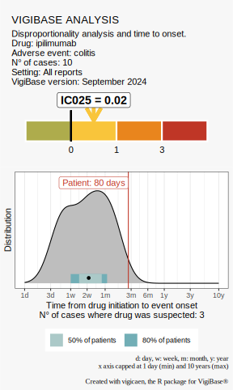

Visit the package website
The goal of vigicaen is to provide tools to analyze VigiBase Extract Case Level.
VigiBase is the World Health Organization’s (WHO) global pharmacovigilance database of individual case safety reports. It is maintained by the Uppsala Monitoring Centre in Sweden.
This package is NOT supported nor reflects the opinion of the WHO, or the Uppsala Monitoring Centre.
Prerequisites
Users are assumed to be familiar with pharmacovigilance analysis principles. Some useful resources can be found here (English) or here (French).
vigicaen is an R package, so you need to have R installed on your computer, and optionally RStudio.
Use of VigiBase Extract Case Level and the subsequent WHODrug data requires a license from the Uppsala Monitoring Centre.
Use of MedDRA requires a license from MedDRA.
Of note, academic researchers are provided with accommodations for these licenses.
Target users
There are 2 types of users this package is aimed at:
Routine pharmacovigilance practitioners. These users may not be very familiar with R, or statistics in general. They would like to collect additional data, when writing pharmacovigilance reports, or working on a reported case (information component, reaction time to onset). These users will be interested in the “Routine pharmacovigilance” vignette,
vignette("routine_pharmacovigilance").Advanced pharmacovigilance researchers. These users must be familiar with R and (a bit of) statistics. The will find tools to load tables, perform usual data management, identify drug and reaction IDs, describe complexe features (dechallenge, rechallenge), perform disproportionality, and get ready-to-use datasets to apply any regression or machine learning algorithm.
Installation
Solution 1
From CRAN
install.packages("vigicaen")
Development version from GitHub
devtools::install_github("pharmacologie-caen/vigicaen")
Solution 2
Find the latest Released version here
Download source code as a tar.gz file.
If you use RStudio, click on “Tools”, “Install Packages…”, select “Package Archive file” and locate the tar.gz file on your computer.
Alternatively, you can use the following command in R:
install.packages("path/to/vigicaen_X.XX.X.tar.gz", repos = NULL, type = "source")
How to use
Visit the package website
Good places to start your journey:
Set the stage with
vignette("getting_started")vignette("routine_pharmacovigilance")vignette("basic_workflow")
Example
You are working on a colitis case reported 150 days after nivolumab initiation.
You would like to know the information component (possibly restricted to a specific population, e.g. older adults), and the time to onset reported for this reaction.
library(vigicaen)
# Step 1: Load datasets (or use example sets
# as shown below)
demo <- demo_
adr <- adr_
drug <- drug_
link <- link_
mp <- mp_
meddra <- meddra_
# Step 2: Pick a drug and a reaction
d_code <-
list(
nivolumab = "nivolumab"
) |>
get_drecno(mp = mp)
a_code <-
list(
colitis = "Colitis (excl infective)"
) |>
get_llt_soc(term_level = "hlt", meddra = meddra)
# Step 3: Plot results
vigi_routine(
case_tto = 150, # your case
demo_data = demo,
drug_data = drug,
adr_data = adr,
link_data = link,
d_code = d_code,
a_code = a_code,
vigibase_version = "September 2024"
)
Example
You want to perform a disproportionality analysis between nivolumab exposure and colitis reporting (reporting odds-ratio or and information component ic).
library(vigicaen)
demo <-
demo_ |>
add_drug(
d_code = ex_$d_drecno,
drug_data = drug_
) |>
add_adr(
a_code = ex_$a_llt,
adr_data = adr_
)
demo |>
compute_dispro(
y = "a_colitis",
x = "nivolumab"
)
#> # A tibble: 1 × 9
#> y x n_obs n_exp or or_ci ic ic_tail ci_level
#> <chr> <chr> <dbl> <dbl> <chr> <chr> <dbl> <dbl> <chr>
#> 1 a_colitis nivolumab 44 31.2 1.88 (1.23-2.88) 0.489 0.0314 95%